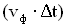
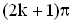
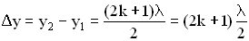
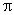
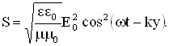

2. Волны
Глава 1. Упругие волны1.1. Упругие продольные и поперечные волны
1.2. Характеристики бегущих волн
1.3. Энергия упругих волн
1.4. Принцип суперпозиции волн. Групповая скорость
Глава 2. Звуковые волны
Глава 3. Электромагнитные волны
2. Волны
Как происходит распространение колебаний? Необходима среда для передачи колебаний или они могут передаваться без нее? Как звук от звучащего камертона доходит до слушателя? Каким образом быстропеременный ток в антенне радиопередатчика вызывает появление тока в антенне приемника? Как свет от далеких звезд достигает нашего глаза? Для рассмотрения подобного рода явлений необходимо ввести новое физическое понятие – волна. Волновые процессы представляют общий класс явлений, несмотря на их разную природу.
Процесс распространения колебаний в пространстве называется волной.
Волны, образованные внешним воздействием, приложенным к упругой среде, называются бегущими волнами: они “бегут” от создающего их источника. Важное свойство бегущих волн заключается в том, что они переносят энергию и импульс. Если внешняя сила совершает гармонические колебания, то вызванные ею волны называются гармоническими бегущими волнами.
Волновой процесс обусловлен наличием связей между отдельными частями системы, в зависимости от которых, мы имеем упругую волну той или иной природы.
Глава 1. Упругие волны
1. Упругими или механическими волнами называются механические возмущения (деформации), распространяющиеся в упругой среде.
Деформации в теле или среде называются упругими, если они полностью исчезают после прекращения внешних воздействий.
Тела, которые воздействуют на среду, вызывая колебания, называются источниками волн. Распространение упругих волн не связано с переносом вещества, но волны переносят энергию, которой обеспечивает волновой процесс источник колебаний.
2. Среда называется однородной, если ее физические свойства, рассматриваемые в данной задаче, не изменяются от точки к точке.
Среда называется изотропной, если ее физические свойства, рассматриваемые в задаче, одинаковы по всем направлениям.
Среда называется линейной, если между величинами, характеризующими внешнее воздействие на среду, которое и вызывает ее изменение, существует прямо пропорциональная связь. Например, выполнение закона Гука означает, что среда линейна по своим механическим свойствам.
1.1. Упругие продольные и поперечные волны
1. Все волны делятся на продольные и поперечные.
Поперечные волны – упругие волны, при распространении которых частицы среды совершают колебания в направлении, перпендикулярном направлению распространения волны.
Продольные волны – упругие волны, при распространении которых частицы среды совершают колебания вдоль направления распространения волны.
Поперечные упругие волны возникают только в твердых телах, в которых возможны упругие деформации сдвига. Продольные волны могут распространяться в жидкостях или газах, где возможны объемные деформации среды, или в твердых телах, где возникают деформации удлинения или сжатия. Исключение составляют поперечные поверхностные волны. Простые продольные колебания – это процесс распространения в пространстве областей сжатий и растяжений среды. Сжатия и растяжения среды образуются при колебаниях ее точек (частиц) около своих положений равновесия.
1.2. Характеристики бегущих волн
1. Длина волны.
Минимальное расстояние, на которое распространяется волна за время, равное периоду колебания точки среды около положения равновесия, называется длиной волны.
Длиной волны называется наименьшее расстояние между двумя точками среды, совершающими колебания в фазе (т.е. разность их фаз равна  ).
).
Если точки разделены расстоянием  , их колебания происходят в противофазе.
, их колебания происходят в противофазе.
2. Фазовая скорость волны.
Из повседневного опыта известно, что бегущие по воде волны распространяются с постоянной скоростью, пока свойства среды, например, глубина воды, не меняется, что говорит о том, что скорость распространения волнового процесса в пространстве остается постоянной. В случае гармонических бегущих волн (см. определение выше) эта скорость называется фазовой.
Фазовая скорость - это скорость распространения данной фазы колебаний, т.е. скорость волны.
Связь длины волны , фазовой скорости и периода колебаний Т задается соотношением:
 .
.
Учитывая, что , где  - линейная частота волны, - период, а циклическая частота волны , получим разные формулы для фазовой скорости:
- линейная частота волны, - период, а циклическая частота волны , получим разные формулы для фазовой скорости:
.
Для волнового процесса характерна периодичность по времени и по пространству.
Т – период колебаний точек среды. Роль пространственного периода играет длина волны . Соотношение между периодом и циклической частотой задается формулой: . Аналогичное соотношение можно записать для длины волны и величиной k, называемой волновым числом: .
Таким образом. Можно добавить еще одно уравнение для фазовой скорости:
.
3. Фазовая скорость различна для разных сред. В случае упругих поперечных волн (в твердом теле) фазовая скорость равна:
,
где - модуль сдвига среды, -ее плотность в невозбужденном состоянии (т.е. когда в этой среде не распространяется упругая волна).
Фазовая скорость упругих продольных волн в твердом теле равна
,
где Е - модуль Юнга, - плотность невозмущенной среды (твердого тела до момента распространения по нему волны).
Фазовая скорость продольных волн в жидкости и газе определяется соотношением:
,
где К – модуль объемной упругости среды – величина, характеризующая способность среды сопротивляться изменению ее объема, - плотность невозмущенной среды.
Фазовая скорость продольных волн в идеальном газе задается формулой:
,
 - показатель адиабаты, - молярная масса, Т – абсолютная температура, R – универсальная газовая постоянная. Фазовая скорость в газе зависит от сорта газа () и от его термодинамического состояния (Т).
- показатель адиабаты, - молярная масса, Т – абсолютная температура, R – универсальная газовая постоянная. Фазовая скорость в газе зависит от сорта газа () и от его термодинамического состояния (Т).
4. Фронт волны. Волновая поверхность.
При прохождении волны по среде ее точки вовлекаются в колебательный процесс последовательно друг за другом.
Геометрическое место точек, до которого к некоторому моменту времени дошел колебательный процесс, называется волновым фронтом.
Геометрическое место точек, колеблющихся в фазе, называется волновой поверхностью.
Волновой фронт – частный случай волновой поверхности. Волновой фронт все время перемещается. Волновые поверхности остаются неподвижными. Они проходят через положения равновесия частиц среды, которые колеблются в одинаковой фазе.
При описании распространения волн широко используют понятие луча. Направления, в которых распространяются колебания, называются лучами. В изотропной среде (см. определение выше) лучи перпендикулярны волновым поверхностям (фронту) и имеют вид прямых линий. В анизотропной среде, а также при дифракции волн, лучи могут искривляться.
Форма волнового фронта определяет вид волны: сферические (от точечного источника в изотропной среде), эллиптические (в анизотропной среде), цилиндрические (от протяженных источников), плоские и другие. На достаточно большом расстоянии от источника небольшой участок любого фронта можно считать плоским.
Если известно положение фронта волны в некоторый момент времени и скорость волны , то его положение в последующий момент времени можно определить на основе принципа Гюйгенса. Согласно этому принципу все точки поверхности волнового фронта являются источниками вторичных волн. Искомое положение волнового фронта совпадает с поверхностью, огибающей фронты вторичных волн.
5. Уравнение бегущей волны.
Уравнением упругой волны называется зависимость от координат и времени скалярных или векторных величин, характеризующих колебания среды при прохождении по ней волны.
Так, для волн в твердом теле такой величиной является смещение от положения равновесия любой точки тела в произвольный момент времени. Для характеристики продольных волн в жидкости или газе используют понятие избыточного давления. Избыточное давление равно разности между давлением в данный момент времени, когда по среде проходит волна, и равновесным, когда возмущений в среде нет.
Получим уравнение бегущей волны в одномерном пространстве, которое предполагаем изотропным и однородным (см. определения выше). Кроме того, силы сопротивления в среде считаем пренебрежимо малыми (т.е. нет затухания колебаний). Пусть точка О - центр (источник) колебаний, она колеблется по закону:
,
где - смещение точки О от положения равновесия, - частота, А – амплитуда колебаний. Часы или секундомер №1 включаются сразу, как только начинаются колебаний точки О, и отсчитывают время t (Рисунок 2.1.1). Ось ОУ совпадает с направлением распространения волны.
Через промежуток времени процесс колебаний дойдет до точки В, и она будет колебаться по закону:
 .
.
Рисунок 2.1.1.
Амплитуда колебаний в случае отсутствия затухания процесса будет такой же как и амплитуда точки О. Часы или секундомер №2 включаются тогда, когда колебательный процесс дойдет до точки В (т.е. когда начинает колебаться точка В), и отсчитывают время . Моменты времени t и связаны между собой соотношением или . Расстояние между точками О и В обозначим . Фазовая скорость волны равна , тогда  . Учитывая соотношения для и и формулы и , можно записать уравнение колебаний точки В в разных видах:
. Учитывая соотношения для и и формулы и , можно записать уравнение колебаний точки В в разных видах:
.
Аналогично уравнению колебаний точки В запишем уравнение колебаний любой точки среды, расположенной на расстоянии y от источника колебаний:
,
где - волновое число (см. определение выше).
Это уравнение и есть уравнение для смещения любой точки пространства в любой момент времени, т.е. уравнение бегущей волны, где А – амплитуда, величина - фаза волны, которая в отличии от фазы колебаний зависит и от времени “t”, и от расстояния “y” колеблющейся точки от источника колебаний.
Вернемся к разделению волн по форме фронта волны и к понятию луча, как направления распространения колебательного процесса. Учтем, что в изотропной среде лучи перпендикулярны фронту и имеют вид прямых линий. Тогда уравнение бегущей волны, полученное выше, есть уравнение плоской бегущей волны, т.е. когда фронт волны – плоскость.
Уравнение плоской отраженной волны в одномерном пространстве легко получить, если представить ее как бегущую волну в отрицательном направлении оси ОУ, что приведет к замене в уравнении бегущей волны координаты “y” на “-y”:
.
Упругая волна называется синусоидальной или гармонической, если соответствующие ей колебания частиц среды являются гармоническими. Так, рассмотренные выше бегущая и отраженная волны являются гармоническими волнами.
6. Волновое уравнение.
Когда мы рассматривали колебания, то для любой колебательной системы получали дифференциальное уравнение, для которого соответствующее уравнение колебаний являлось решением. Аналогично уравнение бегущей и отраженной волны являются решениями дифференциального уравнения второго порядка в частных производных, называемого волновым уравнением и имеющего вид:
,
где - фазовая скорость волны.
Уравнения бегущей и отраженной волн и волновое уравнение представлены для случая одного измерения, т.е. распространения волны вдоль оси ОУ. В волновое уравнение входят вторые частные производные по времени и координате от смещения потому, что есть функция двух переменных t и y.
7. Скорость и ускорение колеблющейся точки. Относительное смещение точек среды.
Если смещение любой точки среды с координатой y в момент времени t задано уравнением:
,
то скорость этой точки есть величина , а ускорение - :
,
1.3. Энергия упругих волн
В среде распространяется плоская упругая волна и переносит энергию, величина которой в объеме  равна:
равна:
,
где - объемная плотность среды.
Если выбранный объем записать как , где S – площадь его поперечного сечения, а  - его длина, то среднее количество энергии, переносимое волной за единицу времени через поперечное сечение S, называется потоком через его поверхность:
.
Количество энергии, переносимое волной за единицу времени через единицу площади поверхности, расположенной перпендикулярно направлению распространения волны, называется плотностью потока энергии волны.
Эта величина определяется соотношением:
,
где -объемная плотность энергии волны,  - фазовая скорость волны. Так как фазовая скорость волны
- фазовая скорость волны. Так как фазовая скорость волны  - вектор, направление которого совпадает с направлением распространения волны, то можно величине плотности потока энергии I придать смысл векторной величины:
- вектор, направление которого совпадает с направлением распространения волны, то можно величине плотности потока энергии I придать смысл векторной величины:
.
Величина , вектор плотности энергии волны, впервые была введена Н.А. Умовым в 1984 году и получила название вектора Умова. Подобная величина для электромагнитных волн называется вектором Умова - Пойнтинга.
Интенсивностью волны называется модуль среднего значения вектора Умова .
1.4. Принцип суперпозиции волн. Групповая скорость
Принцип суперпозиции (наложения) волн установлен на опыте. Он состоит в том, что в линейной среде волны от разных источников распространяются независимо, и накладываясь, не изменяют друг друга. Результирующее смещение частицы среды в любой момент времени равно геометрической сумме смещений, которые частица получит, участвуя в каждом из слагаемых волновых процессов.
Согласно принципу суперпозиции накладываться друг на друга без взаимного искажения могут волны любой формы. В результате наложения волн результирующее колебание каждой частицы среды может происходить по любому сложному закону. Такое образование волн называется волновым пакетом. Скорость движения волнового пакета не совпадает со скоростью ни с одной из слагаемых волн. В этом случае говорят о скорости волнового пакета. Скорость перемещения максимума группы волн (волнового пакета) называется групповой скоростью. Она равна скорости переноса энергии волнового пакета.
На практике мы всегда имеем дело с группой волн, так как синусоидальных волн, бесконечных в пространстве и во времени, не существует. Любая ограниченная во времени и пространстве синусоидальная волна есть волновой пакет (его называют цуг волны). Групповая скорость такого пакета совпадает с фазовой скоростью бесконечных синусоидальных волн, результатом сложения которых он является.
В общем виде связь между групповой и фазовой скоростями имеет вид:
 .
.
§ 1.5. Интерференция волн. Стоячие волны.
1. Интерференцией волн называется явление наложение двух и более волн, при котором в зависимости от соотношения между фазами этих волн происходит устойчивое во времени их взаимное усиление в одних точках пространства и ослабление в других.
В пространстве всегда найдутся такие точки, в которых разность фаз складываемых колебаний равна величине , где k – целое число, т.е. волны (от разных источников) приходят в такие точки в фазе. В них будет наблюдаться устойчивое, неизменно продолжающееся все время усиление колебаний частиц. Найдутся в пространстве, где распространяется несколько волн, и такие точки, где разность фаз будет равна , т.е. волны приходят в эти точки в противофазе. В таких точках пространства будет наблюдаться устойчивое ослабление колебаний частиц.
Устойчивая интерференционная картина возникает только при наложении таких волн, которые имеют одинаковую частоту, постоянную во времени разность фаз в каждой точке пространства. Волны, удовлетворяющие этим условиям и источники, создающие такие волны, называются когерентными. Плоские синусоидальные волны, частоты которых одинаковы, когерентны всегда.
2. Запишем условия максимумов и минимумов при интерференции. Когерентные точечные источники и испускают волны по всем направлениям. До точки наблюдения М расстояние от первого источника , а от второго - .
Колебания точки М под действием волн от двух источников и описываются уравнениями:
, .
Амплитуда результирующего колебания в точке М определится следующим образом (см. раздел “Сложение колебаний”):
.
Амплитуда колебаний точки М максимальна (), если
, где
Величина называется разностью хода двух волн.
Условие максимума при интерференции имеет вид:
.
Если целое число волн укладывается на разности хода двух волн, то при их сложении наблюдается интерференционный максимум.
Амплитуда колебаний точки М минимальна (), если
, ().
Условие минимума при интерференции имеет вид:
.
Если нечетное число полуволн укладывается на разности хода двух волн, то при их сложении наблюдается интерференционный минимум.
3. Простейший случай интерференции наблюдается при наложении бегущей и отраженной волн, что приводит к образованию стоячей волны. Уравнения бегущей и отраженной волны имеют вид:
 ,
,
Суммарное смещение частицы среды, находящейся на расстоянии y от источника колебаний, равно сумме смещений и :
.
Это и есть уравнение стоячей волны. Величина - амплитуда, а () - фаза стоячей волны. Можно сказать, что частицы в стоячей волне имеют одну фазу колебаний. Амплитуда колебаний частиц в стоячей волне зависит от их координат (расстояний до источника колебаний), но не зависит от времени. Знак модуля поставлен в формуле для амплитуды стоячей волны, потому что амплитуда – величина положительная.
В стоячей волне есть точки, которые все время остаются неподвижными. Такие точки называются узлами смещения, их положение определяется из условия:
, отсюда следует . Выполнение этого соотношения будет при условии для  Итак, координаты узлов задаются формулой:
Итак, координаты узлов задаются формулой:
.
Расстояние между двумя соседними узлами равно  .
.
Точки среды, колеблющиеся с наибольшей амплитудой, называются пучностями стоячей волны, их положение (координаты) определяются соотношением:
.
Это уравнение можно получить из условия максимума амплитуды
, т.е. . Последнее соотношение выполняется при значениях аргумента ( ).
).
Расстояние между двумя соседними пучностями равно  .
.
4. Изменение фазы волны при ее отражении.
Как отмечалось ранее, стоячая волна образуется при сложении бегущей и отраженной волн. Отраженную волну можно рассматривать как бегущую волну, распространяющуюся в обратном направлении и ее можно получить при отражении бегущей волны от границы двух сред. Для синусоидальных волн это означает, что при отражении от более плотной среды фаза волны скачком изменяется на радиан, а при отражении от менее плотной среды фаза волны не изменяется. Изменение фазы на  радиан соответствует появлению дополнительного хода луча, равного .
Глава 2. Звуковые волны
1.Важным видом продольных волн являются звуковые волны. Так называются волны с частотами 17 – 20000 Гц. Учение о звуке называется акустикой. В акустике изучаются волны, которые распространяются не только в воздухе, но и в любой другой среде. Упругие волны с частотой ниже 17 Гц называются инфразвуком, а с частотой выше 20000 Гц – ультразвуком.
Звуковые волны – упругие колебания, распространяющиеся в виде волнового процесса в газах, жидкостях, твердых телах.
2. Избыточное звуковое давление. Уравнение звуковой волны.
Уравнение упругой волны позволяет вычислить смещение любой точки пространства, по которому проходит волна, в любой момент времени. Но как говорить о смещении частиц воздуха или жидкости от положения равновесия? Звук, распространяясь в жидкости или газе, создает области сжатия и разряжение среды, в которых давление соответственно повышается или понижается по сравнению с давлением невозмущенной среды.
Если - давление и плотность невозмущенной среды (среды, по которой не проходит волна), а - давление и плотность среды при распространении в ней волнового процесса, то величина называется избыточным давлением. Величина есть максимальное значение избыточное давление (амплитуда избыточного давления).
Изменение избыточного давления для плоской звуковой волны (т.е. уравнение плоской звуковой волны) имеет вид:
,
где y – расстояние от источника колебаний точки, избыточное давление в которой мы определяем в момент времени t.
Если ввести величину избыточной плотности и ее амплитуды так же, как мы вводили величину избыточного звукового давления, то уравнение плоской звуковой волны можно было бы записать так:
.
3. Объективные и субъективные характеристики звука.
Само слово “звук” отражает два различных, но взаимосвязанных понятия: 1)звук как физическое явление; 2)звук – то восприятие, которое испытывает слуховой аппарат (человеческое ухо) и ощущения, возникающие у него при этом. Соответственно характеристики звука делятся на объективные, которые могут быть измерены физической аппаратурой, и субъективные, определяемые восприятием данного звука человеком.
К объективным (физическим) характеристикам звука относятся характеристики, которые описывают любой волновой процесс: частота, интенсивность и спектральный состав. В таблицу 3 включены сравнительные данные объективных и субъективных характеристик.
Таблица 3.
|
Субъективные Характеристики |
Объективные характеристики |
|
Высота звука |
Высота звука определяется частотой волны |
|
Тембр (окраска звука) |
Тембр звука определяется его спектром |
|
Громкость (сила звука) |
Сила звука определяется нтенсивностью волны (или квадратом ее амплитуды) |
Остановимся на некоторых определениях.
Частота звука измеряется числом колебаний частиц среды, участвующих в волновом процессе, в 1 секунду.
Интенсивность волны измеряется энергией, переносимой волной в единицу времени через единичную площадь (расположенную перпендикулярно направлению распространению волны).
Спектральный состав (спектр) звука указывает из каких колебаний состоит данный звук и как распределены амплитуды между отдельными его составляющими.
Различают сплошные и линейчатые спектры. Для субъективной оценки громкости используются величины, называемые уровнем силы звука и уровнем громкости. Все акустические величины и их размерности в СИ приведены в приложении.
Глава 3. Электромагнитные волны
1. Электромагнитными волнами называются возмущения электромагнитного поля (т.е. переменное электромагнитное поле), распространяющиеся в пространстве.
Утверждение о существовании электромагнитных волн является непосредственным следствием решения системы уравнений Максвелла. Согласно этой теории следует, что переменное электромагнитное поле распространяется в пространстве в виде волн, фазовая скорость которых равна:
где - скорость света в вакууме, , - электрическая и магнитная постоянные, , - соответственно диэлектрическая и магнитная проницаемость среды.
2. Электромагнитные волны - поперечные волны. Векторы Е и Н поля электромагнитной волны взаимно перпендикулярны друг другу. Вектор скорости волны и векторы Е и Н образуют правую тройку векторов (Рисунок 2.1.4).
Для сравнения ориентации тройки векторов , Е и Н на рисунке приведено расположение осей декартовой системы координат. Такое сопоставление уместно и в дальнейшем будет использовано для определения проекций векторов Е и Н на координатные оси.
Рисунок 2.1.4
Взаимно перпендикулярные векторы Е и Н колеблются в одной фазе (их колебания синфазные). Модули этих векторов связаны соотношением:
которое справедливо для любой бегущей электромагнитной волны независимо от формы ее волновых поверхностей.
3.По форме волновых поверхностей волны могут быть плоские, эллиптические, сферические и т.д..
Монохроматической волной называется электромагнитная волна одной определенной частоты. Монохроматическая волна не ограничена в пространстве и во времени. В каждой точке электромагнитного поля монохроматической волны проекции векторов Е и Н на оси координат совершают гармонические колебания одинаковой частоты . Например, для плоской монохроматической волны, распространяющейся вдоль положительного направления оси ОУ, как показано на рисунке 2.1.3.,ее уравнение имеет вид:
Такие волны называются плоско (или линейно) поляризованными волнами.
Плоскость, в которой происходит колебание вектора Е называют плоскостью поляризации линейно поляризованной волны, а плоскость колебаний вектора Н – плоскостью колебаний. Ранее эти названия были обратными (см. [1]).
6. Все сказанное о стоячих волнах в упругих средах относится и к электромагнитным волнам. В этом случае, однако, волна характеризуется не одним вектором, а двумя взаимно перпендикулярными векторами Е и Н.
Стоячая электромагнитная волна состоит из двух стоячих волн - магнитной и электрической, колебания которых сдвинуты по фазе на .
7. Энергия электромагнитных волн.
Объемная плотность энергии электромагнитного поля в линейной изотропной среде задается соотношением:
с - скорость света в вакууме.
В случае плоской линейно поляризованной монохроматической волны, распространяющейся вдоль положительного направления ОY, напряженность электрического поля задается уравнением:
соответственно объемная плотность энергии этой волны
Значение объемной плотности энергии волны меняется за период от 0 до .Среднее за период значение энергии равно:
.
8. Вектор плотности потока энергии электромагнитной волны называется вектором Умова - Пойнтинга:
Для линейно поляризованной монохроматической волны вектор Пойнтинга направлен в сторону распространения волны и численно равен: 
Интенсивность электромагнитной волны равна модулю среднего значения вектора Пойнтинга за период его полного колебания:
Интенсивностью электромагнитной волны называется физическая величина, численно равная энергии, переносимая волной за единицу времени через единицу площади поверхности, расположенной перпендикулярно к направлению распространения волны.
Интенсивность бегущей монохроматической волны: - фазовая скорость волны, среднее значение объемной плотности энергии поля волны.
Интенсивность света (электромагнитных волн, рассматриваемых в оптике) прямо пропорциональна квадрату амплитуды колебаний вектора напряженности Е поля световой волны.